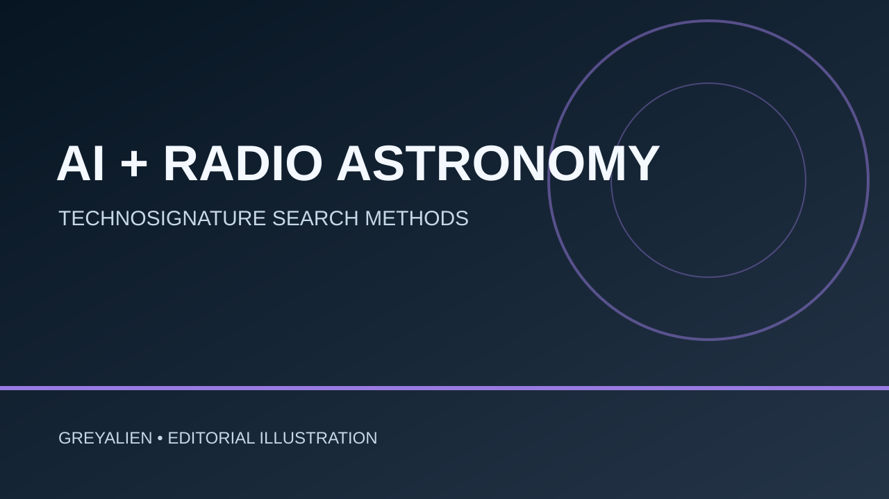

Science & Technology / Technosignatures · 2026-11-03
Agentic AI in SETI: Real-Time Radio Astronomy and Technosignature Detection

NVIDIA’s October 30, 2026 technical announcement describes work involving the Allen Telescope Array, SETI researchers and AI-assisted observatory operations. Kit Eaton covered the development for Inc. on November 3.
What the system does
The described architecture supports automated telescope control, calibration and rapid analysis of large radio-astronomy data streams. NVIDIA reports processing capability up to 2.4 terabits per second and a demonstration detecting a known pulsar in real time.
What the demonstration does not show
Detection of a known pulsar validates an astronomical signal-processing workflow; it is not evidence of extraterrestrial intelligence. Candidate technosignatures would still require interference rejection, repeat observations, instrument calibration and independent confirmation.
Research connections
Technosignatures, SETI Institute, Breakthrough Listen, Allen Telescope Array, NVIDIA Holoscan, real-time signal processing, natural-source discrimination and observational uncertainty.
NVIDIA technical announcement · Technosignatures research